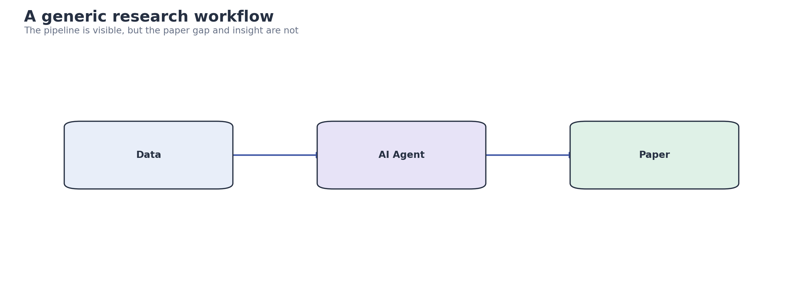
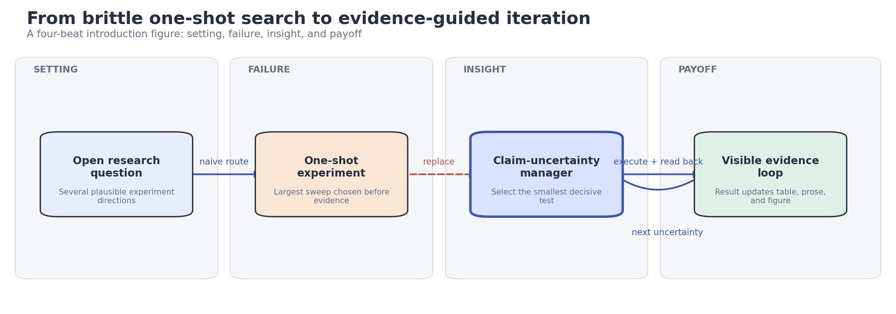
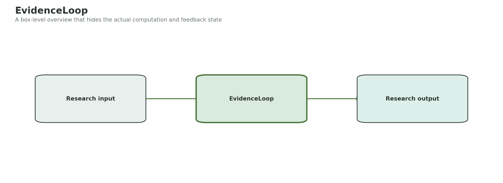
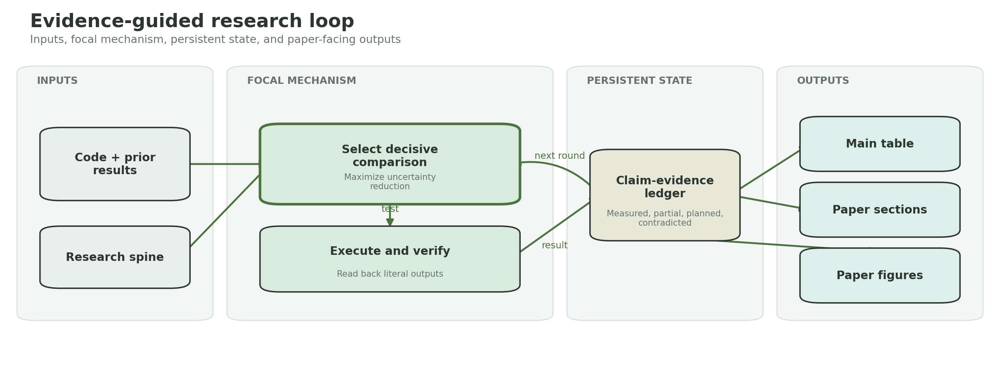
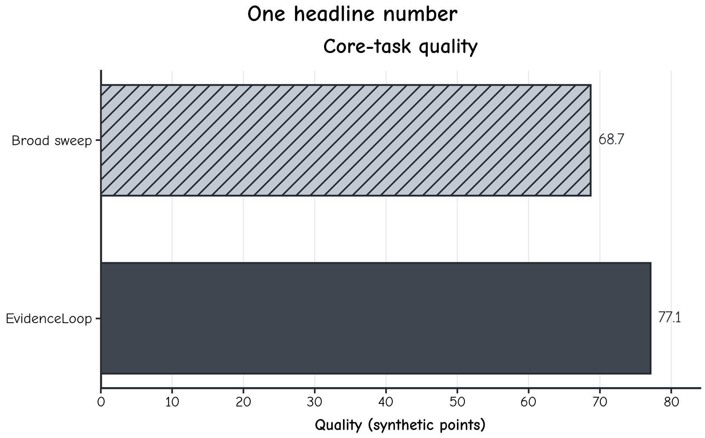
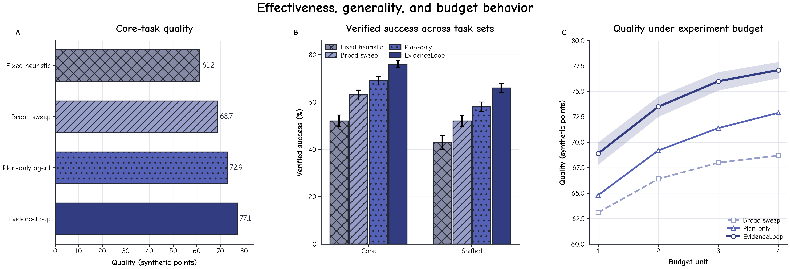

Intro / Figure 1

只有 Data → Agent → Paper，读者看不到现有流程为何失败，也看不到论文的核心 insight。

用 setting → failure → insight → payoff 建立四拍叙事，并把下一轮 uncertainty 作为反馈关系画出来。
这个页面使用完全合成的 EvidenceLoop 案例，展示加入四个新 Skills 后，intro 图、方法主图、实验图、摘要、Introduction、方法段和主表如何从“看起来像论文”推进到“每一处都回答明确研究问题”。
概念图先确定 visual sentence，实验图再绑定精确数据。After 版本同时提供 source JSON、SVG、PDF 和 PNG。

只有 Data → Agent → Paper，读者看不到现有流程为何失败，也看不到论文的核心 insight。

用 setting → failure → insight → payoff 建立四拍叙事，并把下一轮 uncertainty 作为反馈关系画出来。

Input → EvidenceLoop → Output 把所有关键计算藏在一个框里，方法段无法逐模块对应。

按 inputs、focal mechanism、persistent state、outputs 展开，并显式展示 manager、executor 和 ledger 的反馈循环。

单一 headline 数值缺少不确定性、泛化条件和预算行为，无法解释增益范围。

三联图分别回答 effectiveness、generality 和 budget behavior；误差、任务切片和方法语义保持一致。
After 文本由同一合成证据包约束，claim audit 从空泛支持推进到 0 个证据问题。
Research agents are useful for science. We propose EvidenceLoop, a new framework for improving research. Experiments show that our method performs consistently better and is more efficient than existing approaches.
Evidence-guided research iteration is a crucial task that connects experimental decisions to defensible paper claims. Existing research-agent workflows typically separate experiment planning from manuscript production, which makes each stage easier to manage. However, these workflows often schedule broad sweeps before identifying the decisive comparison and rarely maintain one verified state across results, prose, and figures. In this paper, we introduce EvidenceLoop, an evidence-guided workflow that organizes iteration around a shared claim-evidence ledger. Specifically, EvidenceLoop ranks pending comparisons by their expected reduction in claim uncertainty and executes the smallest decisive test. To further prevent result-to-prose drift, it reopens each emitted artifact before updating the ledger, so downstream claims depend only on verified outputs. Moreover, it propagates the same state to experiment coverage, section claims, and figure semantics, completing the link from a run to the paper. Extensive experimental results in a synthetic showcase of 12 tasks demonstrate that the complete fixture improves declared quality by 8.4 points over a broad-sweep baseline while reducing declared execution cost by 17%. These illustrative values validate the audit workflow only within the synthetic fixture.
Automating research is important. Existing agents can search papers, run code, and write reports, but they still have limitations. We develop EvidenceLoop to address these problems. Our method combines planning, experiments, and writing, and our contributions are a new framework and extensive experiments.
Evidence-guided research iteration links experimental decisions, result artifacts, and manuscript claims into a traceable process. This linkage matters because a paper's central claim is only as reliable as the comparison that tests it. Yet a broad experiment sweep can consume budget while leaving the decisive comparison unknown. As illustrated in Figure 1, that failure disconnects execution from the evidence needed by the final narrative.
Existing research-agent workflows can be grouped into planning-first and execution-first approaches. Planning-first approaches decompose a research goal into tasks, which improves coverage before code runs. This decomposition is useful for coordination, but its fixed plan cannot use observed results to revise which comparison matters most. Execution-first approaches instead automate code changes and repeated runs, allowing rapid empirical iteration. Although this automation increases throughput, it does not by itself connect each run to a scoped manuscript claim.
In addition, artifact-first approaches synchronize tables, prose, or figures after experiments finish. This strategy reduces presentation drift, yet it inherits whichever comparisons the earlier workflow chose. Taken together, the three families support planning, execution, and presentation, but they do not jointly select decisive evidence, verify emitted artifacts, and propagate one evidence state through the paper.
Despite this progress, three issues remain. First, broad schedules do not prioritize the comparison that most reduces claim uncertainty, so an effective workflow must select experiments against explicit claims. Second, automated runs can be recorded before their artifacts are read back, which requires a verified state transition rather than a success message. Finally, separately updated tables, sections, and figures can diverge unless every downstream artifact reads the same evidence state. These requirements call for a workflow in which verified execution extends claim-aware experiment selection and controls manuscript synchronization.
To address these limitations, we propose EvidenceLoop, which organizes research iteration around a shared claim-evidence ledger. Its comparison selector ranks pending tests by expected uncertainty reduction, providing claim-aware experiment choice. Building on that choice, its artifact readback step updates the ledger only from reopened outputs, providing verified state transitions. Finally, its downstream synchronizer makes experiment coverage, section claims, and figure semantics read the updated ledger, preventing cross-artifact drift. A synthetic showcase of 12 tasks evaluates quality, efficiency, component causality, and artifact consistency, with the complete fixture improving declared quality by 8.4 points over the broad-sweep baseline. Our contributions can be summarized as follows:
(1) a claim-aware comparison selector that turns paper assertions into ordered experimental decisions;
(2) a verified readback ledger that binds emitted results to scoped claims; and
(3) a downstream synchronization contract evaluated through effectiveness, ablation, efficiency, and consistency checks.
EvidenceLoop takes the research project as input and uses an agent to improve it. The agent plans experiments, runs them, and writes the paper. It repeats this process until the research is complete.
EvidenceLoop receives the active repository, research spine, and current result artifacts. It first constructs a claim-evidence ledger whose entries pair each scoped claim with its status, decisive metric, and source path. An experiment manager then selects the pending comparison with the highest expected reduction in claim uncertainty.
The executor applies the selected change, runs the experiment, and reopens the emitted result before updating the ledger. Downstream table, writing, and figure stages read only this verified snapshot: the table stage checks required cells and evidence families, the writing stage resolves section claims to evidence IDs, and the figure stage maps the same entities and relations to editable visual specifications. The updated ledger then becomes the input state for the next round.
每个新增行列对应一个 reviewer question。合成示例从两行单指标，推进到 lower bound、strong baseline、closest method、proposed method，以及 effectiveness、ablation、robustness、efficiency、replication 五类证据。
2 / 8 required cells；缺少 2 类 baseline role 和 5 个证据族。
16 / 16 required cells；baseline roles 与五类证据族全部显式登记。
| Method | Core tasks · Quality (↑) | Core tasks · Verified success (↑) | Shifted tasks · Quality (↑) | Shifted tasks · Verified success (↑) |
|---|---|---|---|---|
| Broad sweep | 68.7 | — | — | — |
| EvidenceLoop | 77.1 | — | — | — |
| Method | Core tasks · Quality (↑) | Core tasks · Verified success (↑) | Shifted tasks · Quality (↑) | Shifted tasks · Verified success (↑) |
|---|---|---|---|---|
| Fixed heuristic | 61.2 ± 1.4 | 52.0 ± 2.5 | 54.8 ± 1.8 | 43.0 ± 2.9 |
| Broad sweep | 68.7 ± 1.1 | 63.0 ± 2.1 | 61.5 ± 1.6 | 52.0 ± 2.4 |
| Plan-only agent | 72.9 ± 0.9 | 69.0 ± 1.8 | 65.4 ± 1.3 | 58.0 ± 2.0 |
| EvidenceLoop | 77.1 ± 0.8 | 76.0 ± 1.5 | 69.8 ± 1.1 | 66.0 ± 1.8 |
总编排只维护研究状态和路由；每个专业 Skill 保留自己的 artifact contract 与 quality gate。
研究 spine、claim-evidence ledger、Round 记录、跨模态一致性。
intro、method、experiment figure 的视觉叙事与 editable vector 输出。
abstract、Introduction、method 的故事主线、引用槽位、原格式修订与 claim audit。
主表覆盖、baselines、metrics、ablations、robustness、efficiency、replication。
精确数据的 bars、curves、uncertainty、SVG/PDF/PNG 与 grayscale QA。
只借鉴可复用的架构思想，不复制项目代码或品牌。
语义规划、风格设计、可视化与 critic 分离。
experiment、plot、prompt、paper template 保持独立 artifact role。
experiment manager 引导探索，并根据问题选择 template 或 open-ended mode。
把 code review 与 replication 纳入 research validation。
阶段化 refinement 和 hierarchical writing。
用 persistent research memory 让每轮结果成为下一轮起点。